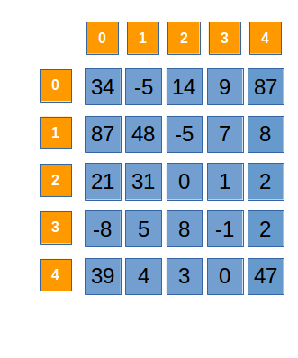
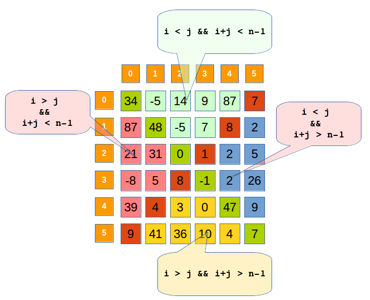

Un tablou bidimensional este tablou pătratic sau matrice pătratică dacă numărul de linii este egal cu numărul de coloane. În această situație folosim pentru ambele dimensiuni o singură variabilă, de regulă n: int n, A[100][100];
Într-o matrice pătratică se disting o categorie specială de elemente, diagonalele. Un element al matricei aparține sau nu diagonalelor sau zonelor delimitate de acestea dacă respectă anumite reguli, în care intervin indicii elementului, nu valoarea elementului. În cele ce urmează, pentru un element oarecare al matricei vom nota cu i indicele de linie și cu j indicele de coloană.
Diagonala principala este reprezentata de elementele cu fundalul verde. Elementele de pe diagonala principala au indexarea de forma: A[0][0], A[1][1] ... A[n][n], de unde se observa faptul ca i=j (indicele de linie este in totdeauna egal cu cel de coloana)
Parcurgerea diagonalei principale se realizeaza astfel:
for(int i = 0 ; i < n ; i ++)
{
//A[i][i]
}
Diagonala secundara este reprezentata de elementele cu fundalul rosu. Elementele de pe diagonala principala au indexarea de forma: A[4][0], A[3][1], A[2][2], A[3][1], A[4][0], de unde se observa faptul ca suma indicilor de pozitie (i, j) este egala cu dimensiunea matricei minus 1, mai precis i + j = n - 1, n fiind dimensiunea matricei.
Parcurgerea elementelor de pe diagonala secundară:
for(int i = 0 ; i < n ; i ++)
{
//A[i][n-1-i]
}
Observație: Dacă n este impar, cele două diagonale au un element comun. Dacă n este par, cele două diagonale nu au elemente comune.
Elementele delimitate de diagonala principala sunt marcate in imagine cu culoarea albastru si verde deschis.
Elementele de sub diagonala principala sunt marcate cu culoarea albastru. In cazul lor, indicele de linie este obligatoriu mai mic decat cel de coloana ( i < j)
Elementele de deasupra diagonalei principale sunt marcate cu culoarea verde deschis. In cazul lor, indicele de linie este mai mare decat indicele de coloana ( i > j)
Elementele de sub diagonala secundara sunt marcate cu albastru. In cazul lor, suma indicilor de pozitie este mai mare strict decat numarul total de linii (sau coloane) minus 1. Mai precis, i + j > n - 1
Elementele de deasupra diagonalei sunt marcate cu roz. In cazul lor, suma indicilor de pozitie este mai mica strict decat numarul total de linii (sau coloane) minus 1. Mai precis, i + j < n-1
Cele două diagonale delimitează în matrice patru zone: Nord, Est, Sud și Vest. Condițiile verificate de indicii elementelor din aceste zone sunt prezentate mai jos:
